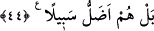

44. Yoksa sen, onların çoğunun gerçekten (söz) dinleyeceğini yahut düşüneceğini
mi sanıyorsun? Hayır, onlar hayvanlar gibidir, hatta onlar yolca daha da sapıktırlar.
“Yoksa sen, onların çoğunun gerçekten” kendilerine okunan âyetleri hakkını vererek
“dinleyeceğini yahut” âyetlerdeki kötülüklerden sakındıran ve güzelliklere çağıran
öğütleri “düşüneceğini mi sanıyorsun?” Bu sebeple de onların durumunu önemseyip
îman etmelerini arzuluyorsun.
Âyette “onların çoğu”nun tahsis edilmesi, içlerinden bir kısmı îman etmiş, bir kısmı
da hakkı kavradığı halde büyüklenerek veya liderliğine zarar gelmesi korkusuyla hakka
karşı direnmiştir.
İbn Atâ der ki: “Çağrını duyuracağını zannetme. Sen ancak ezelî çağrıya kulak
verdikleri zaman onlara işittirirsin. Yoksa senin seslenmen ve çağrıda bulunman onlara
hiç bir fayda vermez. Onların senin çağrına icâbet etmeleri ezelî sesleniş ve çağrıya
verilen cevabın bereketi sebebiyledir. Gaflet edip yüz çevirenler ezelde cevap verme
mahallinden uzak bulundukları için yüz çevirmektedirler.”
“Hayır, onlar” kulaklarını çınlatan âyetlerden faydalanmadıkları, gördükleri delil ve
mucizeler üzerinde düşünme melekesini kaybettikleri için gaflet ve dalâlette
mesel/sembol olan “hayvanlar gibidir,”
et-Te’vîlâtü’n-Necmiyye’de der ki: “Bütün istekleri yemek ve içmek olan hayvanlar
gibi onların yemek, içmek ve nefsin arzularını gerçekleştirmekten başka hiç bir istek ve
arzuları yoktur.”
“hatta onlar yolca daha da sapıktırlar.” Çünkü hayvanlar kendilerini sevkedenlere
boyun eğer, kendilerine iyilik edenleri bilir, faydalı şeyleri ister, zarar veren şeylerden
kaçınırlar. Bunlar ise Rabb’lerine boyun eğmez, O’nun ihsânını şeytanın kötülüğünden
ayıramazlar, en büyük menfaat olan sevabı talep etmez, en büyük zarar olan ilâhî
cezâdan sakınmazlar. Üstelik hayvanlar bu kâfirlerin aksine gerçekten hiç bir hakka
inanmaz, hayır ve şer işlemezler. Çünkü hayvanların cehâletleri hiç bir kimseye zarar
vermez. Bunların câhilliği ise fitneleri körükler ve insanları haktan çevirmeye sebep
olur. Hayvanlar kemâl ve yüceliği istemeye muktedir olamadıklarından onların hiç bir
kusuru ve yerilecek tarafı yoktur. Bunlar ise ihmalkârdırlar. Kusurları sebebiyle en
büyük cezâya müstehaktırlar.
Bilesin ki Allah melekleri yarattı ve onların fıtratına aklı koydu. Hayvanları yarattı ve
onların içine şehveti koydu. İnsanları yarattı ve onların içine iki şeyi, yâni akıl ve
şehveti yerleştirdi. Şehveti aklına üstün gelen kimse hayvanlardan daha kötüdür. Bundan
dolayı Allah “hatta onlar yolca daha da sapıktırlar.” buyurmuştur. Çünkü insan
mağlûb olmuş aklı ve üstün gelen hevasıyla hayvanların yalnızca şehvetiyle
ulaşamadıkları en aşağı derekelere erişir. Aklı hevâsına, yâni şehvetine üstün gelen
kimse ise Allah’ın kendilerine emrettiklerine karşı gelmeyen, emredildikleri şeyleri
yapan melekler seviyesindedir. Kimin de işine Allah gâlib olursa meleklerden daha